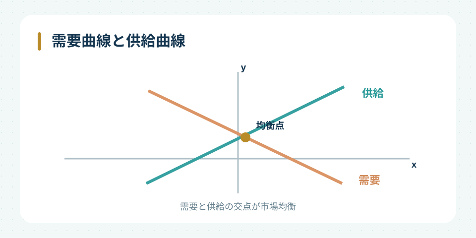

公共 / UNIVERSITY ENTRANCE EXAM
需要と供給・市場均衡
価格の変化を考えるときは、需要と供給を別々に考えるのがコツです。共通テストでも私大入試でも、市場均衡の考え方が土台になります。
公
このページで学べること
グラフと計算問題を解く。要点を読んだら、最後の確認問題で理解度をチェックしましょう。
POINT 01
需要・供給の基本

一般に価格が上がると買いたい数量（需要量）は減り、売りたい数量（供給量）は増えます。他の条件が一定なら、需要曲線は右下がり、供給曲線は右上がりです。
| 変化 | 均衡価格 | 均衡数量 |
|---|---|---|
| 需要が増える（右シフト） | 上昇 | 増加 |
| 供給が増える（右シフト） | 低下 | 増加 |
| 需要が減る（左シフト） | 低下 | 減少 |
| 供給が減る（左シフト） | 上昇 | 減少 |
POINT 02
市場均衡を式で求める
需要量 Qd と供給量 Qs が等しくなる価格が均衡価格です。
例題
需要：Qd = 100 − 2P、供給：Qs = 20 + 2P
100 − 2P = 20 + 2P → 80 = 4P → P = 20
Q = 100 − 2 × 20 = 60
均衡価格20、均衡数量60。POINT 03
超過需要・超過供給
均衡価格より価格が低ければ、買いたい数量が売りたい数量より多くなりやすく、超過需要（品不足）が発生します。逆に高ければ超過供給（売れ残り）です。
注意：需要量の増減（同じ需要曲線の上の移動）と、需要そのものの変化（曲線のシフト）は別です。
PRACTICE
確認問題に挑戦！
全3問。答えを考えてから「解答と解説を見る」を押してね。
Q01
Qd = 80 − P、Qs = 20 + 2P の均衡価格・数量を求めよう。
解答と解説を見る ＋
正解・解答例
均衡価格 P = 20、均衡数量 Q = 60
80−P=20+2P → 60=3P → P=20、代入して Q=60。
Q02
供給曲線が変わらず需要曲線が右へ移動すると、価格は？
解答と解説を見る ＋
正解・解答例
上昇する
需要が増えるため、一般に均衡価格も均衡数量も増加します。
Q03
均衡価格より低い価格上限を設けると何が起きやすい？
解答と解説を見る ＋
正解・解答例
超過需要（品不足）
低価格で買いたい人が増える一方、供給量は不足しやすくなります。
今日のまとめ
均衡は「需要量＝供給量」。需要・供給の曲線の移動方向も別々に判断。
ここまで読めたら、ひと区切り。
理解できたら学習済みにチェックして、次の記事へ。
記事について
StudyMasterの無料学習コンテンツです。AIを補助的に用いて作成しています。例題・解答は公開前にご自身でも確認してください。内容に誤りがある場合は、学校の教科書などと照合してください。
公開・更新：2026年11月12日